2023 & 2025
Computational Characterization of Materials
Volunteer Teaching Assistant, doctoral course, Coatings and Polymeric Materials program, North Dakota State University. Supported hands-on laboratory sessions.
Teaching
My teaching experience spans general, organic, analytical, bioorganic, and computational materials chemistry across undergraduate and doctoral education.
Volunteer Teaching Assistant, doctoral course, Coatings and Polymeric Materials program, North Dakota State University. Supported hands-on laboratory sessions.
Assistant Professor, Amazonian State University, Ecuador. Delivered lectures and laboratory instruction.
Assistant Professor, PUCESE University, Ecuador. Delivered lectures and laboratory instruction.
Instructor, Central University of Las Villas, Cuba. Delivered lectures and laboratory instruction.
Instructor, University of Ciego de Ávila, Cuba. Delivered lectures and laboratory instruction.
Computational chemistry education
I develop browser-based computational activities that guide students from molecular representation and chemical data to predictive modeling, molecular simulation, and electronic-structure analysis. The resources are organized as a progressive learning sequence, from foundational cheminformatics concepts to advanced molecular modeling and quantum chemistry.
Foundations & cheminformatics
Students begin with molecular representation, file formats, descriptors, and structure–property modeling before progressing to more computationally intensive methods.

Google Colab · Available now
A hands-on notebook introducing Python-based molecular visualization with RDKit, including SMILES, 2D structures, molecular properties, functional groups, and interactive 3D visualization.

Google Colab · Available now
A practical introduction to SMILES, MOL/SDF, MOL2, PDB, CIF/mmCIF, XYZ, and PDBQT, with hands-on format inspection and conversion using RDKit and Open Babel.
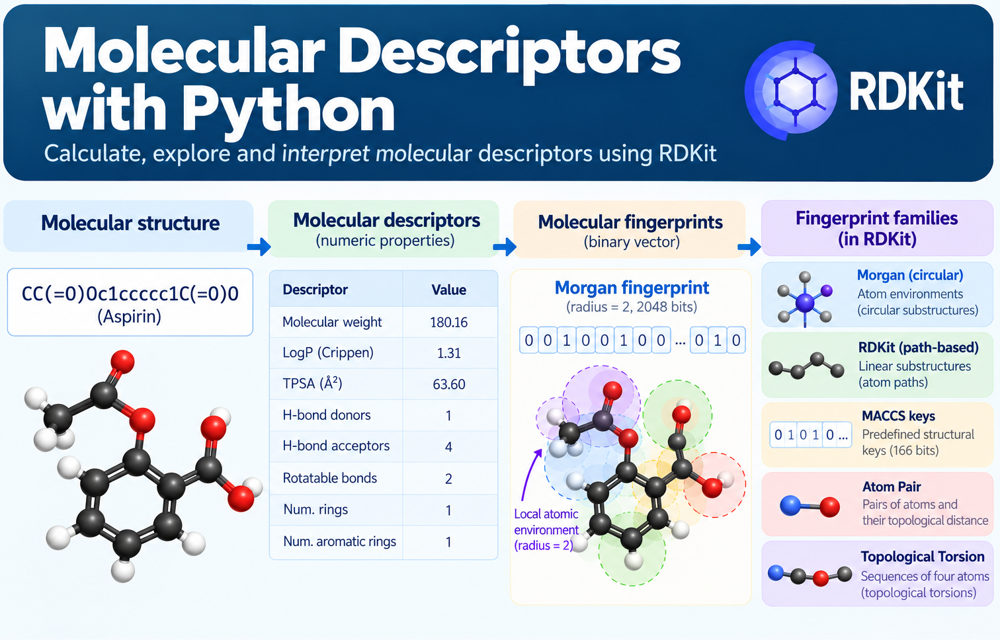
Google Colab · Available now
An introductory notebook for generating and exploring molecular descriptors with RDKit, connecting chemical structure with quantitative molecular properties and introducing molecular fingerprint families with a hands-on focus on Morgan fingerprints.

Google Colab · Available now
A step-by-step activity for preparing molecular data, building a multiple linear regression QSPR model, evaluating its predictive performance, exploring descriptor–target relationships, and interpreting the results.
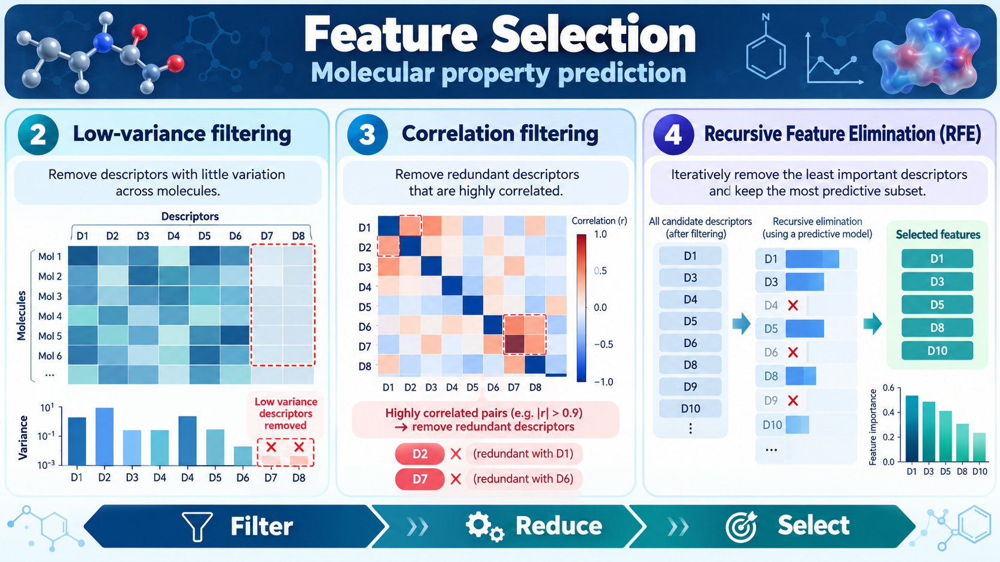
Google Colab · Available now
A hands-on introduction to selecting informative molecular descriptors using variance and correlation filtering, mutual information, RFE, Random Forest importance, and Lasso.
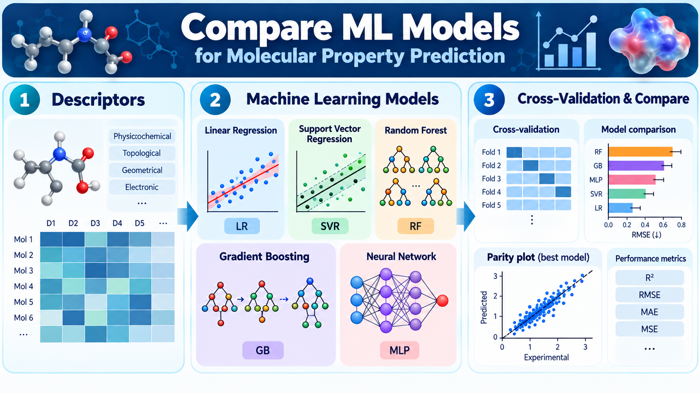
Google Colab · Available now
A practical QSPR notebook for comparing linear, kernel, tree-ensemble, and neural-network regressors using the same molecular descriptors, train/test split, cross-validation strategy, and performance metrics.
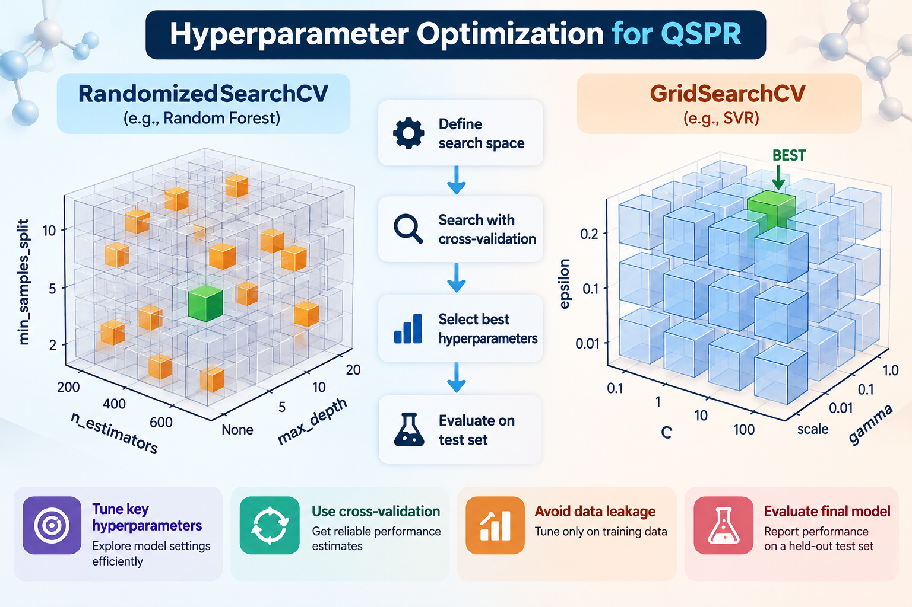
Google Colab · Available now
A hands-on notebook for improving molecular property models with GridSearchCV and RandomizedSearchCV while keeping preprocessing, cross-validation, model selection, and final test evaluation leakage-safe.
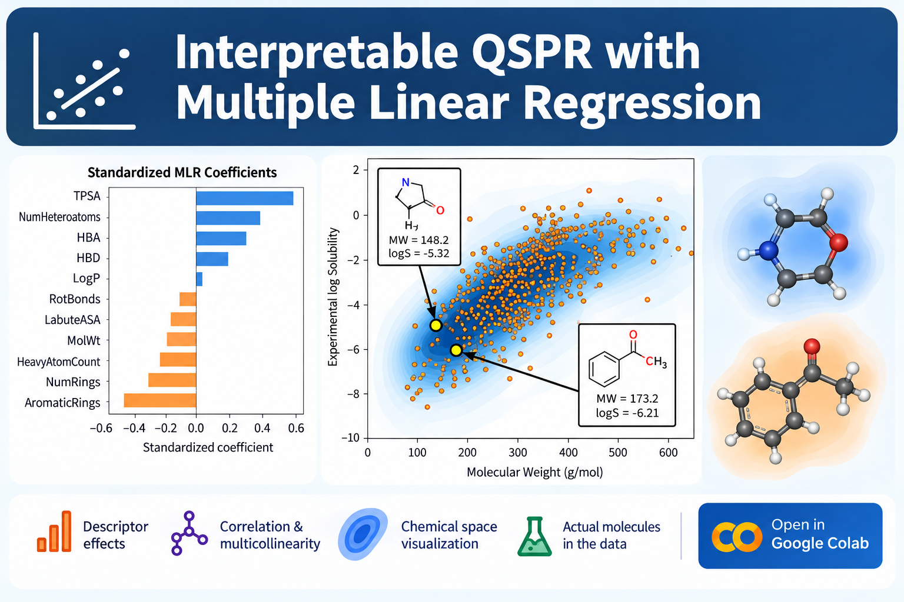
Google Colab · Available now
A chemically focused interpretation notebook connecting standardized MLR coefficients, Pearson correlations, multicollinearity, descriptor–property scatter plots, KDE density regions, and representative molecular structures.
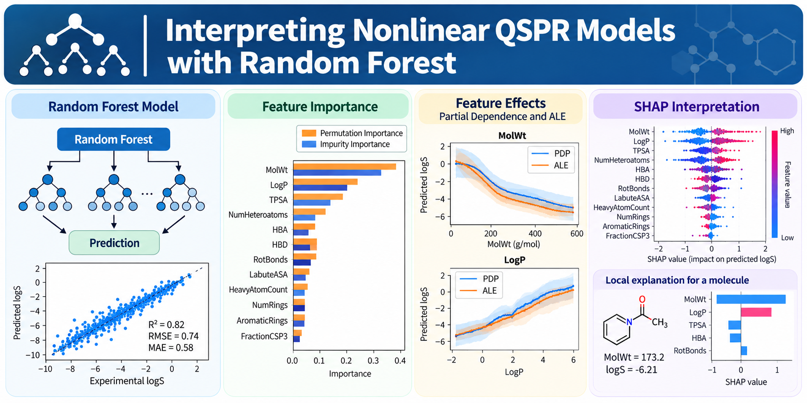
Google Colab · Available now
A hands-on notebook for interpreting nonlinear QSPR models with Random Forest using permutation importance, partial dependence, accumulated local effects, SHAP, and chemically grounded local explanations.
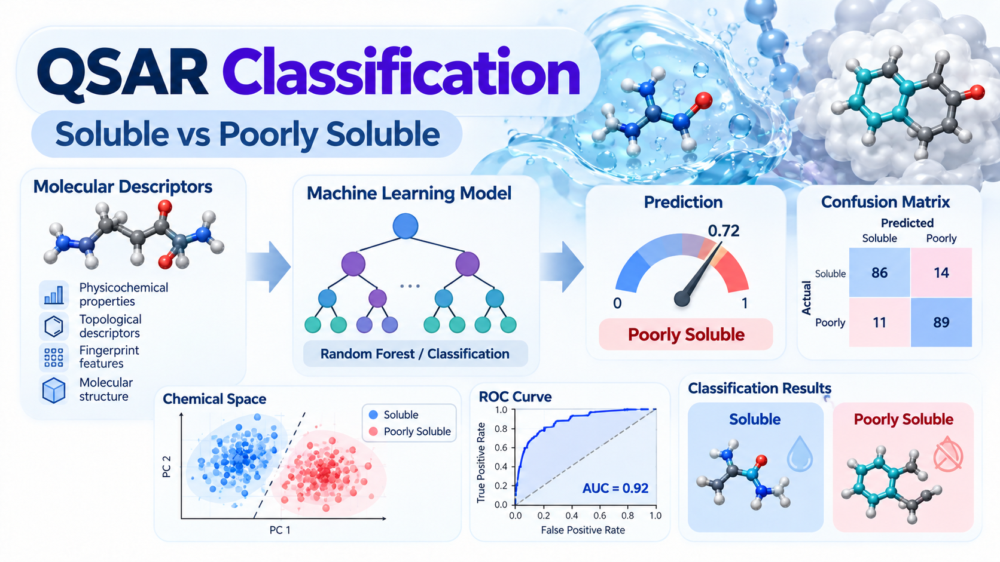
Google Colab · Available now
A hands-on classification notebook using molecular descriptors to distinguish soluble and poorly soluble molecules with Logistic Regression and Random Forest, including class balance, confusion matrices, precision, recall, F1, ROC-AUC, class probabilities, thresholds, and class weighting.
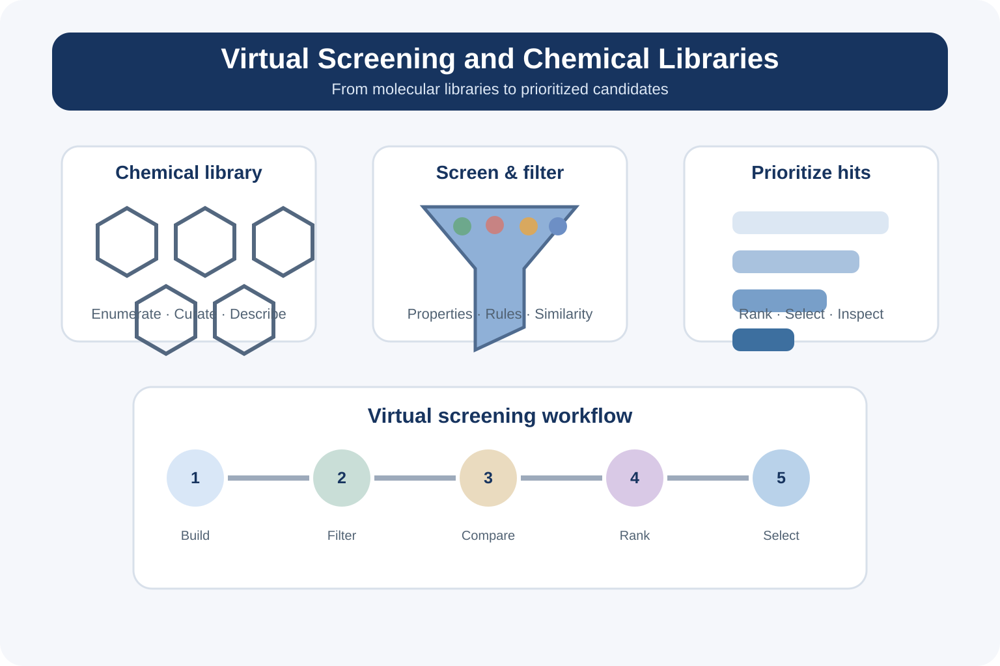
Google Colab · Available now
A practical notebook introducing the construction and prioritization of molecular libraries for virtual screening, with an emphasis on organizing candidate structures, profiling molecular properties, filtering chemical space, and selecting compounds for downstream computational analysis.
Molecular modeling & simulation
These activities introduce docking and molecular dynamics, moving from predicted binding poses to trajectory-based analysis of molecular motion and interactions.

Google Colab · Available now
A hands-on introduction to protein–ligand docking using AutoDock Vina, including search-box definition, docking setup, pose ranking, visualization, score interpretation, and discussion of validation by redocking.
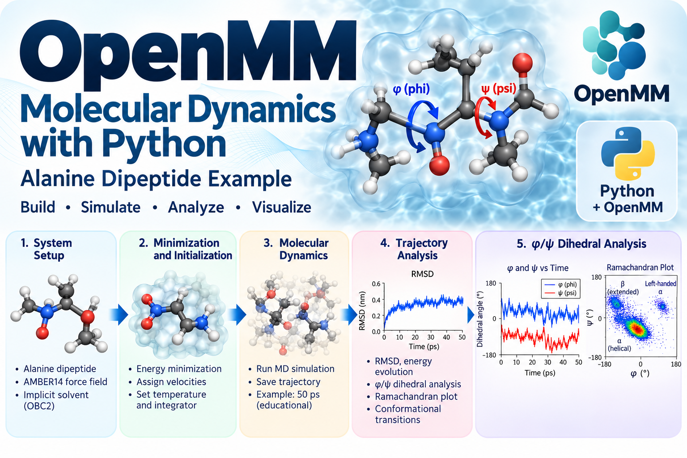
Google Colab · Available now
A fast, beginner-friendly introduction to molecular dynamics using alanine dipeptide, including force-field setup, energy minimization, Langevin dynamics, trajectory analysis, RMSD, backbone φ/ψ dihedral angles, and Ramachandran plots.
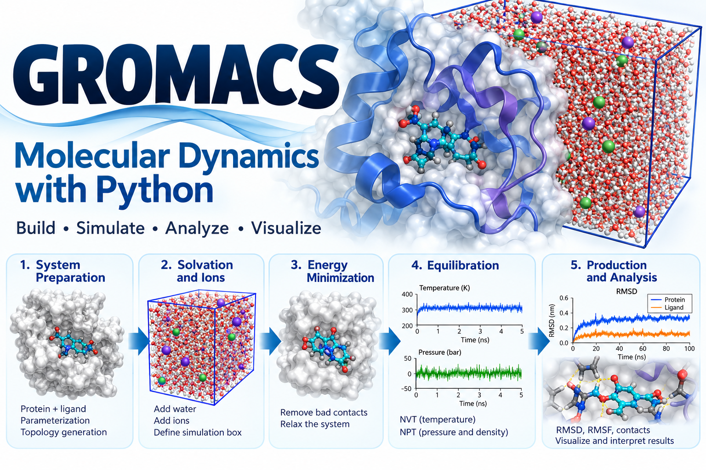
Google Colab · Available now
A guided classroom workflow for preparing and simulating the c-Abl–imatinib complex in explicit solvent with GROMACS, including topology preparation, solvation, ion addition, energy minimization, NVT and NPT equilibration, short production MD, RMSD, and protein–ligand contact analysis.
Quantum chemistry & excited states
The quantum chemistry sequence connects ground-state electronic structure with excited-state calculations, frontier orbitals, electrostatic potential, UV–Vis spectra, and transition analysis.
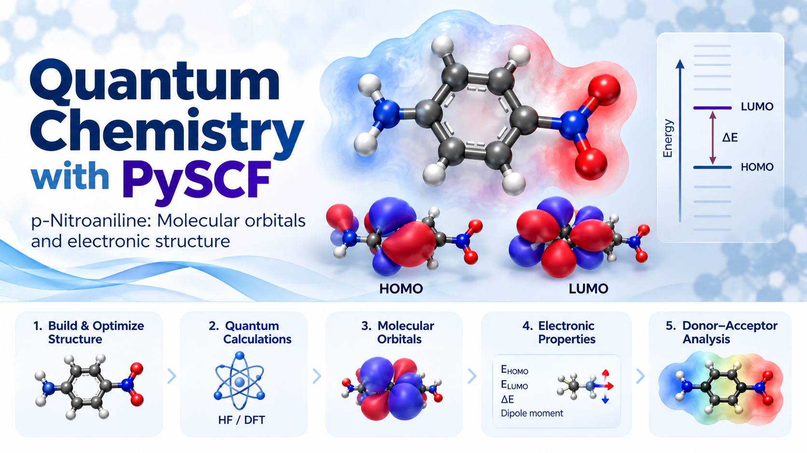
Google Colab · Available now
An introductory quantum chemistry notebook using p-nitroaniline to explore donor–acceptor electronic structure with Hartree–Fock and PBE0 DFT, including HOMO/LUMO energies, frontier-orbital visualization, dipole moments, and basis-set effects.
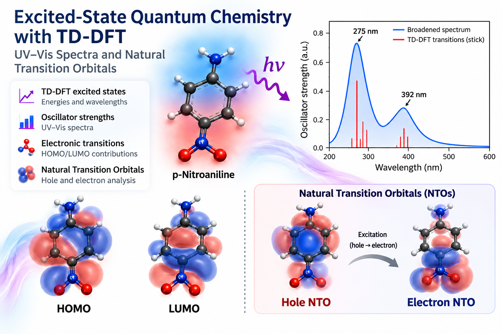
Google Colab · Available now
A follow-up quantum chemistry notebook using p-nitroaniline to explore singlet excited states with TD-DFT, including excitation energies, wavelengths, oscillator strengths, stick and broadened UV–Vis spectra, transition character, and optional natural transition orbital analysis.
I connect chemical fundamentals to realistic data and computational examples, helping students move from concepts to reproducible analysis and scientific interpretation.
I approach mentoring as a progression from chemical reasoning and reproducible computational practice toward increasing independence in data analysis, molecular modeling, scientific communication, and research problem solving.
Cheminformatics, molecular descriptors, QSPR/QSAR, explainable machine learning, polymer informatics, computational toxicology, and Python for chemical data.